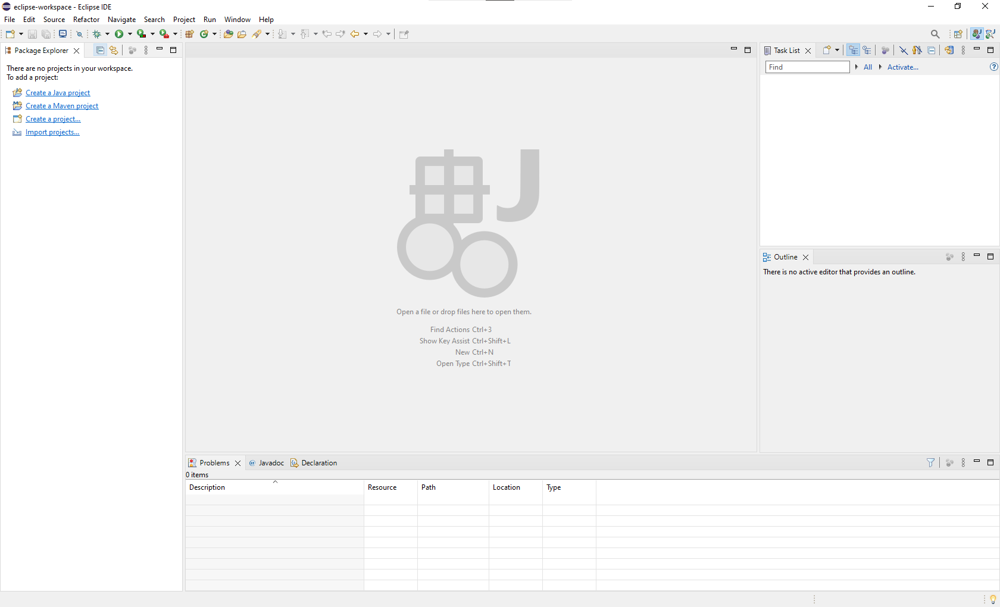
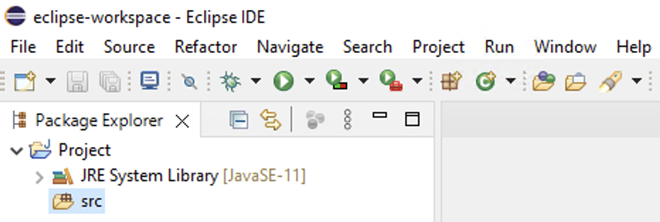
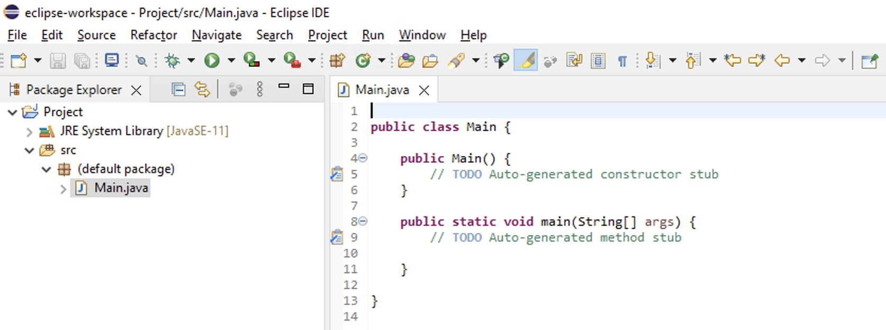
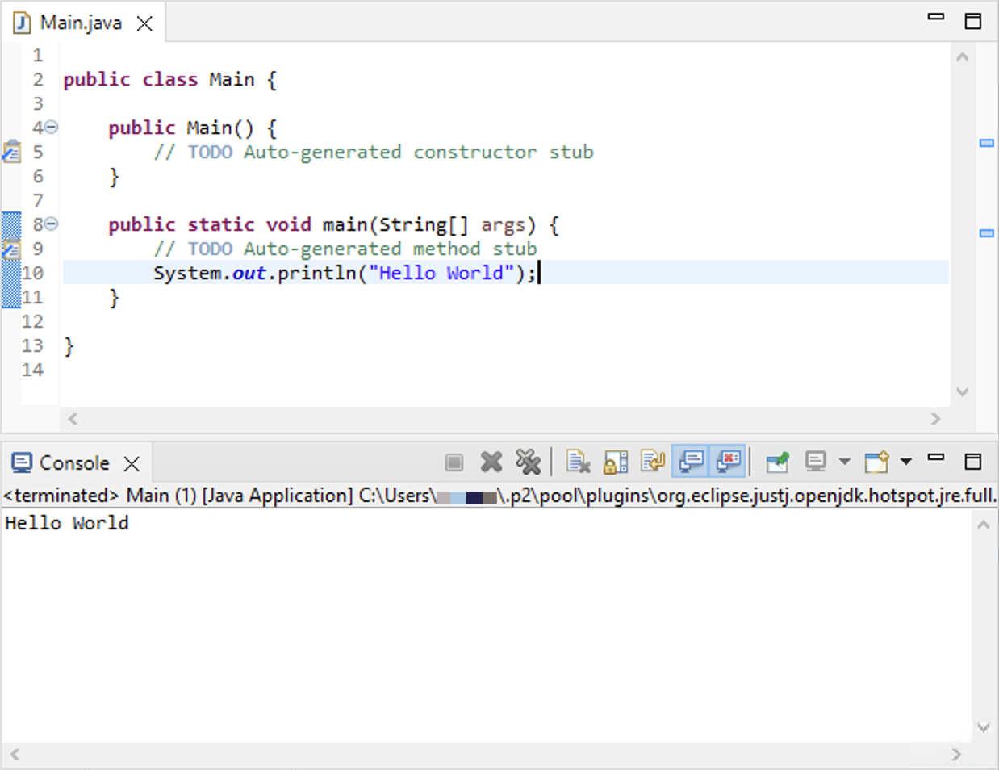
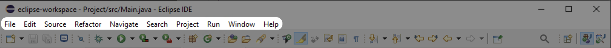
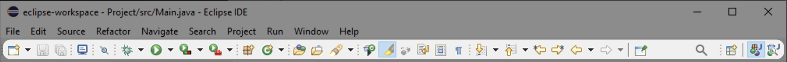
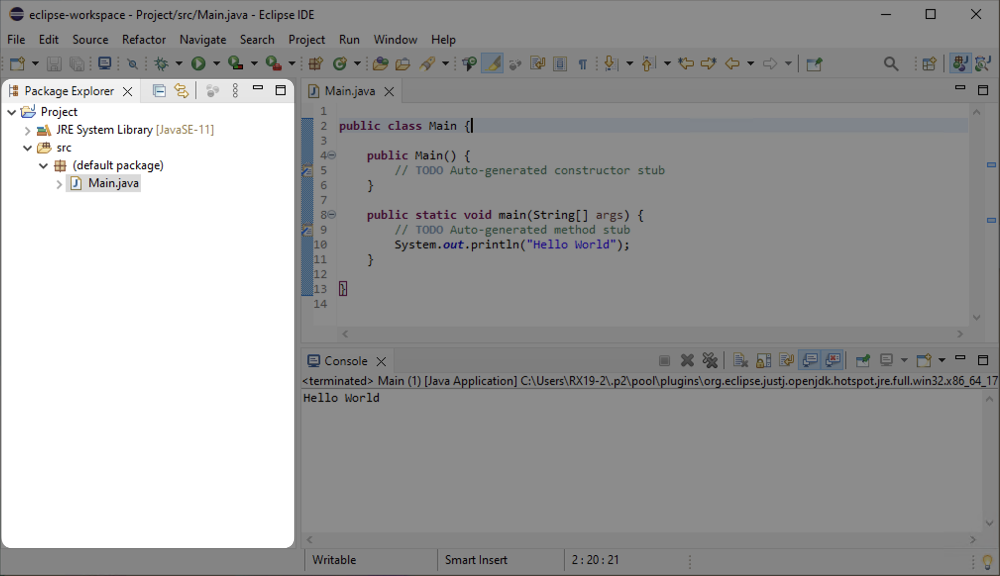
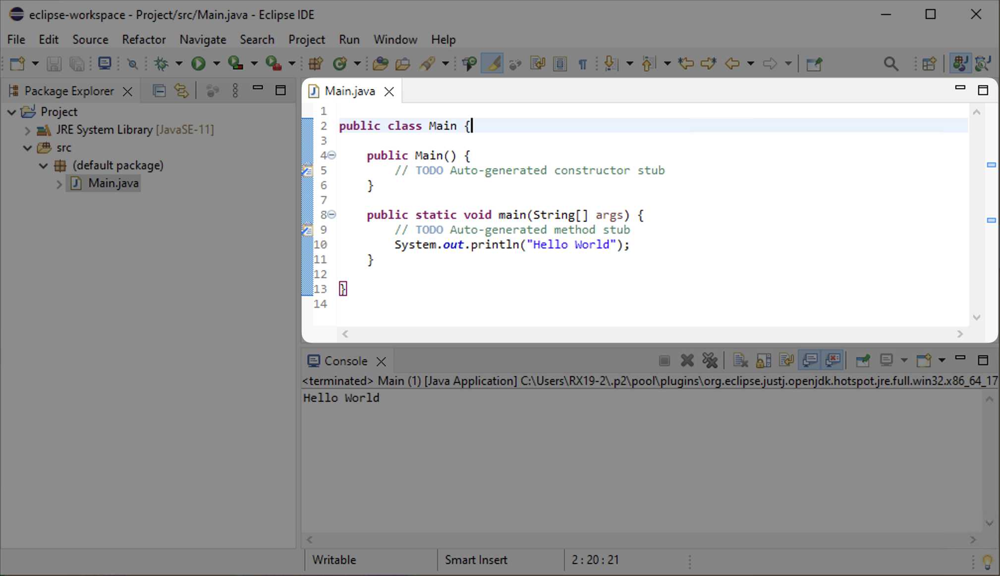
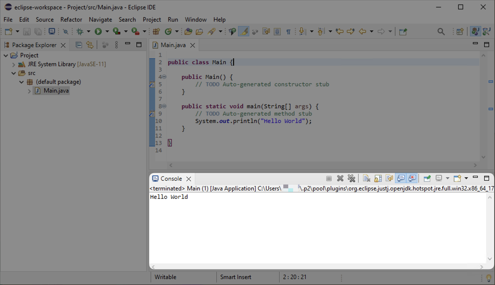
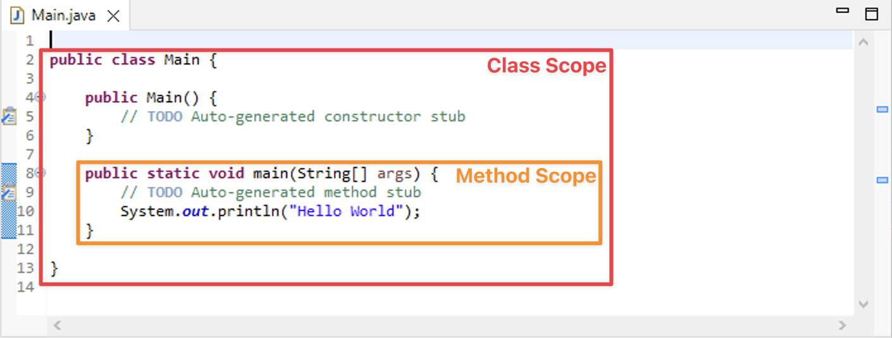

Pembuatan Java Project
Cara Membuat Java Project
Langkah 1. Buka aplikasi Eclipse. Apabila aplikasi Eclipse belum terpasang pada perangkat, silakan ikuti panduan sebagai berikut.
{kind=link}
Tampilan Loading pada Aplikasi Eclipse
Langkah 2. Pilih workspace yang ingin digunakan untuk menyimpan Java project. Secara default, workspace akan terletak pada C:\Users\user\eclipse-workspace. Kemudian, pilih tombol Launch.
{kind=link}
Tampilan Pemilihan Workspace pada Aplikasi Eclipse
Langkah 3. Silakan tunggu hingga aplikasi Eclipse terbuka. Secara default, tampilan aplikasi akan tampak seperti berikut.
{kind=link}
Tampilan Utama Aplikasi Eclipse
Langkah 4. Buat Java project dengan cara memilih tombol File pada bagian menu bar (nomor 1). Kemudian, pilih tombol New (nomor 2) dan Java Project (nomor 3).
{kind=link}
Tampilan Menu Pembuatan Java Project
Note
Terdapat cara lain untuk membuat Java project, yaitu dengan menggunakan shortcut ALT + SHIFT + N dan tekan huruf J. Kemudian, tekan Enter.
Langkah 5. Masukan nama Java project yang diinginkan (nomor 1). Pastikan versi JRE yang digunakan sudah sesuai (nomor 2). Kemudian, pilih tombol Finish (nomor 3).
{kind=link}
Tampilan Konfigurasi Java Project
Langkah 6. Java project sudah berhasil dibuat.
{kind=link}
Tampilan Java Project
Cara Membuat Java Class
Langkah 1. Klik kanan pada nama project yang sudah dibuat (nomor 1). Pilih tombol New (nomor 2) dan Class (nomor 3).
{kind=link}
Tampilan Menu Pembuatan Java Class
Note
Terdapat cara lain untuk membuat Java class, yaitu dengan menggunakan shortcut ALT + SHIFT + N dan tekan huruf C.
Langkah 2. Masukan nama Java class yang diinginkan (nomor 1). Pastikan checkbox dengan nama public static void main (String[] args) (nomor 2) dan Constructors from superclass sudah terpilih (nomor 3). Kemudian, pilih tombol Finish (nomor 4).
{kind=link}
Tampilan Konfigurasi Java Class
Langkah 3. Java class sudah berhasil dibuat.
{kind=link}
Tampilan Java Class
Cara Menjalankan Java Project
Pada aplikasi Eclipse cara menjalankan Java project sudah dipermudah, yaitu hanya dengan memilih tombol Run atau dapat menggunakan shortcut F11.
{kind=link}
Tampilan Menu Run
Apabila program yang dibuat adalah console, maka aplikasi Eclipse secara otomatis akan membukakan tab Console sebagai berikut.
{kind=link}
Hasil Program Sederhana
Tab-Tab Umum Pada Aplikasi Eclipse
Menu Bar berisikan pengaturan utama seperti File, Run, Window, dan sebagainya. Di dalam setiap pengaturan tersebut, terdapat beberapa peraturan yang dapat dipilih.
{kind=link}
Tampilan Menu Bar pada Aplikasi Eclipse
Toolbar berisikan pengaturan umum yang sering sering digunakan untuk mempercepat pencarian seperti membuat sesuatu, menjalankan program, debugging program, dan sebagainya.
{kind=link}
Tampilan Toolbar pada Aplikasi Eclipse
Package Explorer merupakan tab yang menampilkan struktur project, termasuk folder (package) dan file yang ada di dalamnya. Selain itu, pembuat program juga dapat mengelola beberapa folder (package) dan file.
{kind=link}
Tampilan Package Explorer pada Aplikasi Eclipse
Editor merupakan tab yang menampilkan konten (kode) dari sebuah file. Pada tab ini, pembuat program dapat menambahkan atau memperbaiki kode yang mereka buat. Pastikan untuk selalu menyimpan file secara berkala, karena perubahan yang dibuat tidak secara otomatis disimpan. Selain itu, pembuat program juga dapat mengelola beberapa file secara bersamaan.
{kind=link}
Tampilan Editor pada Aplikasi Eclipse
Console merupakan hasil dari program ketika dijalankan jika program yang dibuat adalah console. Selain itu, apabila program yang dibuat terdapat kesalahan (error), maka pesan kesalahan (error) juga akan ditampilkan.
{kind=link}
Tampilan Console pada Aplikasi Eclipse
Entry Point pada Java
Entry Point pada Java
Setiap program Java membutuhkan setidaknya satu buah entry point. Entry point merupakan method paling pertama yang akan dieksekusi apabila program dijalankan. Method yang pertama kali akan dijalankan adalah public static void main (String[] args). Di dalam method tersebut, terdapat sebuah kode untuk menghasilkan output “Hello World”. Oleh karena itu, hasil output tersebut dapat terlihat pada tab Console.
Scope pada Java
{kind=link}
Scope pada Java
Scope merupakan cakupan dalam sebuah kode program yang terdapat diantara tanda kurung kurawal pembuka ({) dan tanda kurung kurawal penutup (}). Setiap class (contohnya public class Main) memiliki class scope yang di dalamnya terdapat beberapa data ataupun method. Sedangkan, setiap method (contohnya public static void main) memiliki method scope yang di dalamnya terdapat beberapa perintah. Scope tersebut dapat berlaku nested, artinya scope dapat berada di dalam scope.
Special Character pada Java
Special character merupakan karakter yang memiliki makna khusus. Berikut adalah beberapa karakter spesial yang ada pada bahasa pemrograman Java.
Special Character |
Penjelasan |
|---|---|
Tanda Kurung |
Digunakan bersamaan dengan sebuah method. |
Tanda Kurung Kurawal |
Digunakan untuk memulai atau mengakhiri sebuah scope. |
Tanda Kurung Siku |
Digunakan untuk mendeklarasikan sebuah array. |
Tanda Kutip Satu |
Digunakan untuk mendeklarasikan sebuah karakter (sebuah huruf). |
Tanda Kutip Dua |
Digunakan untuk mendeklarasikan sebuah string (kumpulan dari beberapa huruf). |
Tanda Garis Miring Ganda |
Digunakan untuk membuat sebuah komentar. |
Tanda Titik Koma |
Digunakan untuk mengakhiri suatu perintah. |